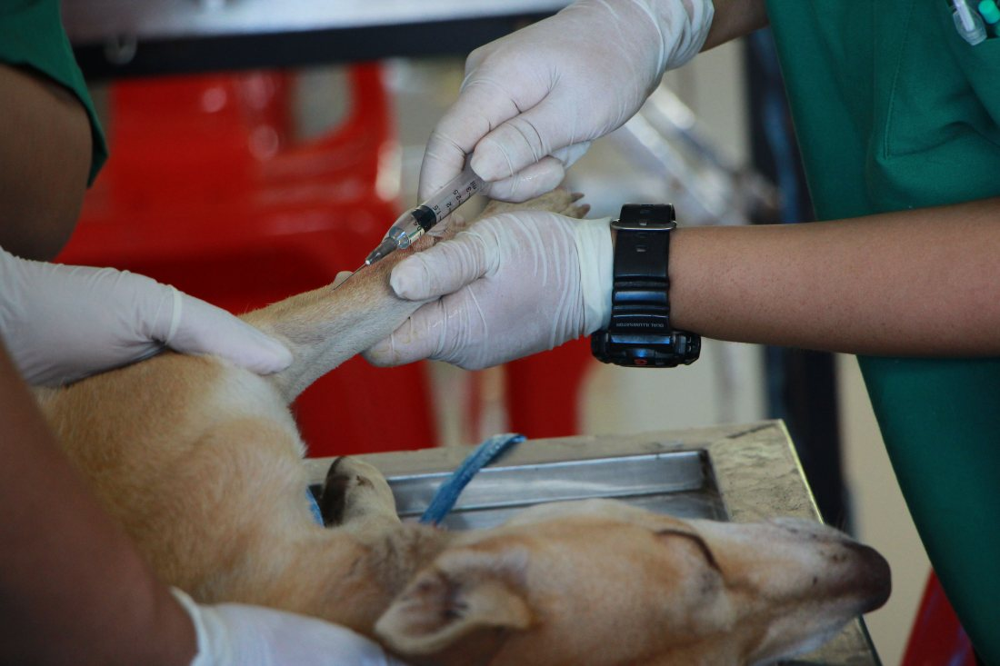
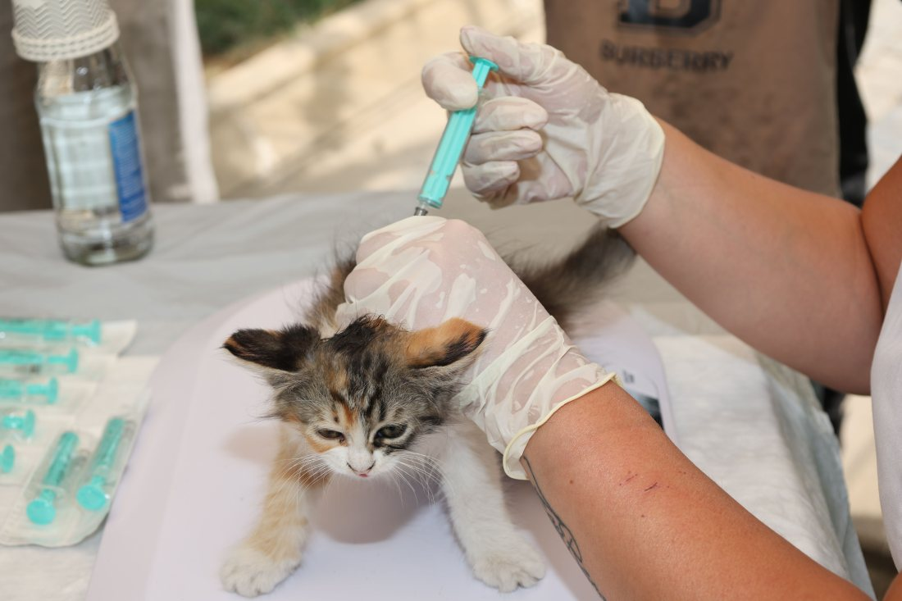

Clínica veterinaria · Temuco
¿Es urgencia
o puede esperar?
Es la pregunta que se hace todo dueño mirando a su animal a las nueve de la noche, y la que decide entre una consulta tranquila mañana y una urgencia cara esta noche. Nadie la contesta por escrito.
- nota en Google
- 4,6
- reseñas
- 177
- teléfono
- (45) 224 0505
La tabla que evita el viaje en vano
Es urgencia,
es para hoy,
o es un control
Tres tiempos y lo que suele ir en cada uno. No sirve para saber qué tiene el animal — sirve para saber cuándo llevarlo, que es una pregunta distinta y mucho más fácil de contestar.
Ante la duda, se llama. Preguntar es gratis. Esta tabla es una referencia general y no reemplaza a nadie. Si un animal está mal y no aparece en ninguna fila, eso también es motivo para llamar. falta: que la clínica revise y firme la tabla
| Lo que se ve | Cuándo | Por qué |
|---|---|---|
| Le cuesta respirar, respira raro o con la boca abierta | Ahora | Es la que menos espera de todas. Un animal que no ventila bien se deteriora en minutos, no en horas. |
| Convulsión, temblor generalizado o pérdida de conciencia | Ahora | Aunque se le pase sola: lo que importa es por qué pasó, y eso se averigua el mismo día. |
| Comió o pudo haber comido algo tóxico | Ahora | Y con el envase en la mano. No se espera a ver si le hace algo, y no se le provoca el vómito por cuenta propia. |
| Sangrado que no se detiene, golpe fuerte o atropello | Ahora | Un animal atropellado puede verse bien y tener algo grave adentro. Se traslada moviéndolo lo mínimo. |
| No puede orinar o lo intenta sin resultado | Ahora | Es más frecuente y más grave de lo que la gente cree, especialmente en gatos machos. |
| Vientre hinchado y duro, con arcadas sin vomitar | Ahora | Sobre todo en perros grandes y después de comer. No es algo que convenga observar en la casa. |
| No come nada desde ayer | Hoy | Un día sin comer en un adulto es una señal; en un cachorro o un gato, es menos tiempo todavía. |
| Vómito o diarrea que se repite | Hoy | Una vez le pasa a cualquiera. Repetido, y con el animal decaído o sin tomar agua, no. |
| Cojera que apareció de golpe | Hoy | Y sobre todo si no apoya la pata. Esperar a ver si se le pasa suele terminar en algo más largo de tratar. |
| Un ojo cerrado, enrojecido o con mucho lagrimeo | Hoy | Los ojos avanzan rápido. Lo que hoy se resuelve simple, en tres días puede no resolverse. |
| Está apagado, escondido, no quiere que lo toquen | Hoy | El cambio de conducta es de las primeras cosas que el dueño nota y de las últimas que reporta. Cuenta. |
| Se rasca seguido o se muerde una zona | Control | Salvo que ya esté con la piel abierta o que empeore rápido, en cuyo caso pasa a ser de hoy. |
| Pelo opaco, caída de pelo, caspa | Control | Suele venir de algo que se ve mejor con calma y con el animal completo, no en una urgencia. |
| Mal aliento, sarro, encías rojas | Control | Es de lo que más se posterga y de lo que más problemas trae a la larga. |
| Un bulto que lleva tiempo y no cambia | Control | Control, sí — pero control de verdad, no dentro de un año. Si crece o cambia, pasa a ser de hoy. |
La tabla no nombra ninguna enfermedad, ningún medicamento ni ninguna causa. Sólo ordena el tiempo. Todo lo demás lo dice la clínica con el animal adelante.

Lo que pasa antes de subir al auto
La mitad de las urgencias no son urgencias
Y la otra mitad no puede esperar. Distinguirlas por teléfono, a las once de la noche y con el animal en brazos, es lo más difícil que hace una veterinaria — y lo que nadie deja por escrito. Una lista de señales, dicha sin dramatismo, ahorra el viaje a la mitad de la gente y se lo apura a la otra mitad.
Escrito para la clínica
El nombre
obliga
Llamarse como la ciudad es la mejor posición de partida que puede tener un negocio, y también la más fácil de desperdiciar. Quien busca «veterinaria Temuco» está buscando literalmente su nombre — y hoy encuentra a otros.
-
01
La búsqueda ya existe
No hay que crear demanda ni convencer a nadie: todos los días hay gente en Temuco escribiendo esas dos palabras. La única pregunta es qué encuentran.
-
02
Sin página, no hay nada que encontrar
Una ficha de Google es un punto en un mapa. Una página es contenido: es lo que permite que alguien llegue buscando «mi perro no come» y termine en la clínica que lo puede atender.
-
03
Lo que sirve es responder preguntas
La tabla de arriba no está ahí sólo para ayudar al dueño: está ahí porque es exactamente lo que la gente busca escrito, y lo que hace que una página aparezca. No hay truco: hay contenido útil.
Lo que no voy a prometer: ninguna posición, ningún puesto en Google, ningún plazo. Eso no lo controla nadie y quien lo promete está vendiendo humo. Lo que sí se puede afirmar es lo evidente: hoy no hay página, y sin página no hay ninguna posibilidad.
Un detalle que conviene revisar. Buscándolos aparecen dos fichas del mismo lugar con el mismo teléfono. Si son dos, conviene unificarlas: dos fichas se reparten las reseñas y ninguna de las dos termina de posicionarse. falta: confirmar si son dos fichas o una
Se llaman igual que la ciudad
Y el que busca «veterinaria Temuco» no los encuentra
Ante la duda, preguntar es gratis
(45) 224 0505
Es el número publicado en su ficha de Google.

